The original, as published: Tony R. Kuphaldt, Lessons In Industrial Instrumentation, Globe valves. CC BY 4.0, https://creativecommons.org/licenses/by/4.0/. Imported as published, from https://www.ibiblio.org/kuphaldt/socratic/sinst/book/liii.pdf https://www.ibiblio.org/kuphaldt/socratic/sinst/book/liii.pdf
Globe valves restrict the flow of fluid by altering the distance between a movable plug and a stationary seat (in some cases, a pair of plugs and matching seats). Fluid flows through a hole in the center of the seat, and is more or less restricted by the plug’s proximity to that hole. The globe valve design is one of the most popular sliding-stem valve designs used in throttling service. A photograph of a small (2 inch) globe valve body appears here:
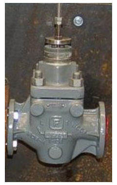
A set of three photographs showing a cut-away Masoneilan model 21000 globe valve body illustrates just how the moving plug and stationary seat work together to throttle flow in a directacting globe valve. The left-hand photo shows the valve body in the fully closed position, while the middle photo shows the valve half-open, and the right-hand photo shows the valve fully open:
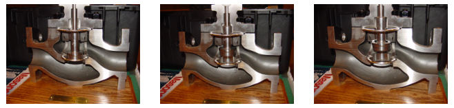
As you can see from these photographs, the valve plug is guided by the stem to maintain alignment with the centerline of the seat. For this reason, this particular style of globe valve is called a stemguided globe valve.
A variation on the stem-guided globe valve design is the needle valve, where the plug is extremely small in diameter and usually fits well into the seat hole rather than merely sitting on top of it. Needle valves are very common as manually-actuated valves used to control low flow rates of air or oil. A set of three photographs shows a needle valve in the fully-closed, mid-open, and fully-open positions (left-to-right):
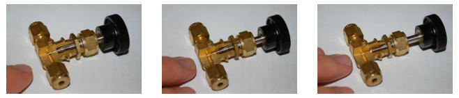
Yet another variation on the globe valve design is the port-guided valve, where the plug has an unusual shape, projecting into the seat. Thus, the seat ring acts as a guide for the plug to keep the centerlines of the plug and seat always aligned, minimizing guiding stresses that would otherwise be placed on the stem. This means that the stem may be made smaller in diameter than if the valve trim were stem-guided, minimizing sliding friction and improving control behavior.
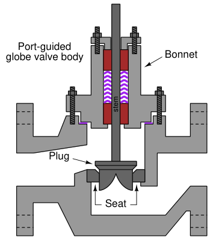
A photograph showing a small port-guided globe valve plug appears in the following photograph:
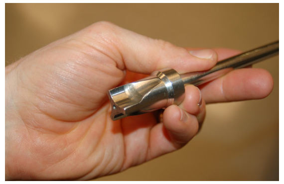
Some globe valves use a pair of plugs (on the same stem) and a matching pair of seats to throttle fluid flow. These are called double-ported globe valves. The purpose of a double-ported globe valve is to minimize the force applied to the stem by process fluid pressure across the plugs:
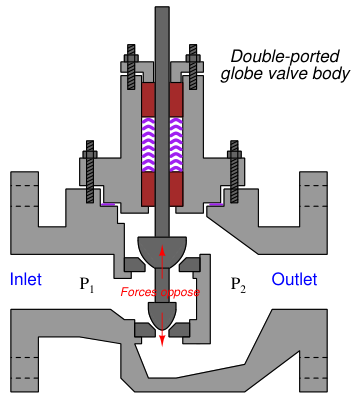
Differential pressure of the process fluid (P1 −P2) across a valve plug will generate a force parallel to the stem as described by the formula F = PA, with A being the plug’s effective area presented for the pressure to act upon. In a single-ported globe valve, there will only be one force generated by the process pressure. In a double-ported globe valve, there will be two opposed force vectors, one generated at the upper plug and another generated at the lower plug. If the plug areas are approximately equal, then the forces will likewise be approximately equal and therefore nearly cancel. This makes for a control valve that is easier to actuate (i.e. the stem position is less affected by pressure drop across the valve).
The following photograph shows a disassembled Fisher “A-body” double-ported globe valve, with the double plug plainly visible on the right:
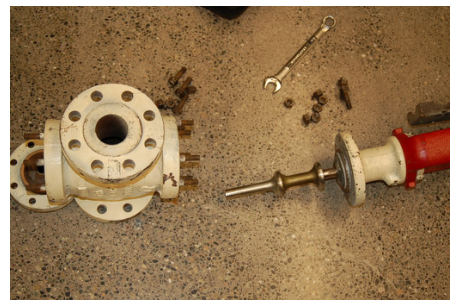
This particular double-ported globe valve happens to be stem-guided, with bushings guiding the upper stem and also a lower stem (on the bottom side of the valve body). Double-ported, port-guided control valves also exist, with two sets of port-guided plugs and seats throttling fluid flow. While double-ported globe valves certainly enjoy the advantage of easier actuation compared to their single-ported cousins, they also suffer from a distinct disadvantage: the near impossibility of tight shut-off. With two plugs needing to come to simultaneous rest on two seats to achieve a fluid-tight seal, there is precious little room for error or dimensional instability. Even if a doubleported valve is prepared in a shop for the best shut-offpossible2, it may not completely shut off when installed due to dimensional changes caused by process fluid heating or cooling the valve stem and body. This is especially problematic when the stem is made of a different material than the body. Globe valve stems are commonly manufactured from stainless steel bar stock, while globe valve bodies are commonly made of cast steel. Cold-formed stainless steel has a different coefficient of thermal expansion than hot-cast steel, which means the plugs will no longer simultaneously seat once the valve warms or cools much from the temperature it was at when it seated tightly.
2The standard preparatory technique is called lapping. To “lap” a valve plug and seat assembly, an abrasive paste known as lapping compound is applied to the valve plug(s) and seat(s) at the areas of mutual contact when the valve is disassembled. The valve mechanism is reassembled, and the stem is then rotated in a cyclic motion such that the plug(s) grind into the seat(s), creating a matched fit. The precision of this fit may be checked by disassembling the valve, cleaning offall remaining lapping compound, applying a metal-staining compound such as Prussian blue, then reassembling. The stem is rotated once more such that the plug(s) will rub against the seat(s), wearing through the applied stain. Upon disassembly, the worn stain may be inspected to reveal the extend of metal-to-metal contact between the plug(s) and the seat(s). If the contact area is deemed insufficient, the lapping process may be repeated.
A more modern version of the globe valve design uses a piston-shaped plug inside a surrounding cage with ports cast or machined into it. These cage-guided globe valves throttle flow by uncovering more or less of the port area in the surrounding cage as the plug moves up and down. The cage also serves to guide the plug so the stem need not be subjected to lateral forces as in a stem-guided valve design. A photograph of a cut-away control valve shows the appearance of the cage (in this case, with the plug in the fully closed position). Note the “T”-shaped ports in the cage, through which fluid flows as the plug moves up and out of the way:
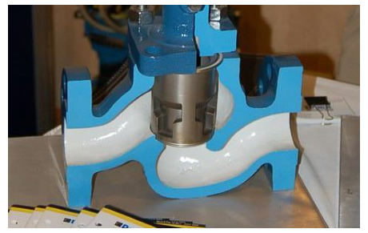
An advantage of the cage-guided design is that the valve’s flowing characteristics may be easily altered just by replacing the cage with another having different size or shape of holes. By contrast, stem-guided and port-guided globe valves are characterized by the shape of the plug, which requires further disassembly to replace than the cage in a cage-guided globe valve. With most cage-guided valves all that is needed to replace the cage is to separate the bonnet from the rest of the valve body, at which point the cage may be lifted out of the body and swapped with another cage. In order to change a globe valve’s plug, you must first separate the bonnet from the rest of the body and then de-couple the plug and plug stem from the actuator stem, being careful not to disturb the packing inside of the bonnet as you do so. After replacing a plug, the “bench-set” of the valve must be re-adjusted to ensure proper seating pressure and stroke calibration.
Cage-guided globe valves are available with both balanced and unbalanced plugs. A balanced plug has one or more ports drilled from top to bottom, allowing fluid pressure to equalize on both sides of the plug. This helps minimize the forces acting on the plug which must be overcome by the actuator:
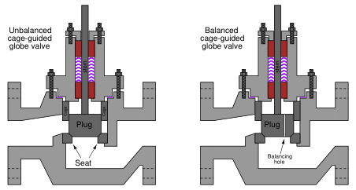
Unbalanced plugs generate a force equal to the product of the differential pressure across the plug and the plug’s area (F = PA), which may be quite substantial in some applications. Balanced plugs do not generate this same force because they equalize the pressure on both sides of the plug, however, they exhibit the disadvantage of one more leak path when the valve is in the fully closed position (through the balancing ports, past the piston ring, and out the cage ports):
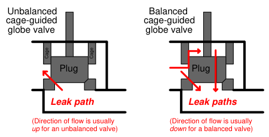
Thus, balanced and unbalanced cage-guided globe valves exhibit similar characteristics to doubleported and single-ported stemor port-guided globe valves, and for similar reasons. Balanced cageguided valves are easy to position, just like double-ported stem-guided and port-guided globe valves. However, balanced cage-guided valves tend to leak more when in the shut position due to a greater number of leak paths, much the same as with double-ported stem-guided and port-guided globe valves.
Another style of globe valve body is the three-way body, sometimes called a mixing or a diverting valve. This valve design has three ports on it, with the plug (in this particular case, a cage-guided plug) controlling the degree to which two of the ports connect with the third port:
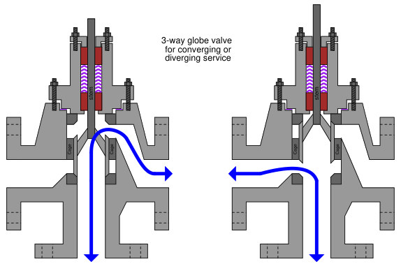
This dual illustration shows a three-way valve in its two extreme stem positions. If the stem is positioned between these two extremes, all three ports will be “connected” to varying degrees. Three-way valves are useful in services where a flow stream must be diverted (split) between two different directions, or where two flow streams must converge (mix) within the valve to form a single flow stream.
A photograph of a three-way globe valve mixing hot and cold water to control temperature is shown here: